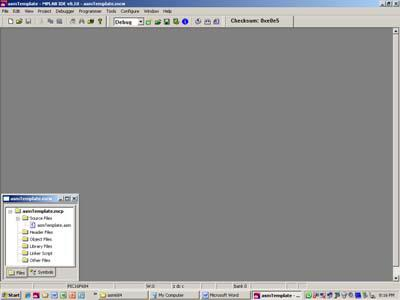
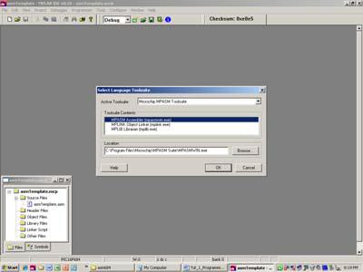
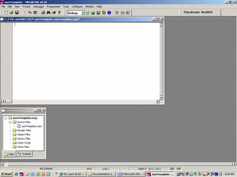
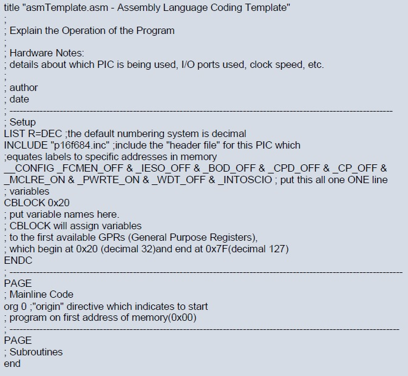
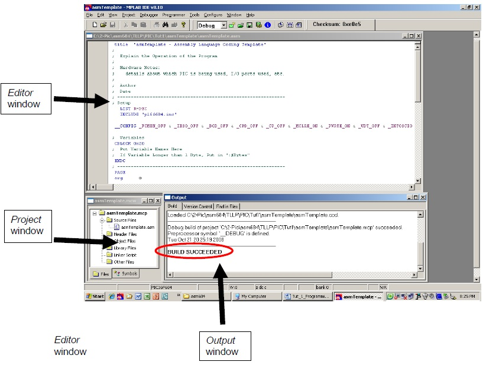

Software Tutorials
TUTORIAL #1: MPLAB IDE
TEJ4M0
Next Tutorial
Objectives:
• Create a project, workspace, source code template in MPLAB IDE that you can use for all your subsequent programs.
• Learn to troubleshoot basic "ERRORS", "WARNINGS" and "MESSAGES".
• Apply a structured approach to coding.
Procedure:
1. Create a new project and workspace:
a. Select Project>New…
b. Name the project asmTemplate in the Project Name textbox.
c. Click the 'Browse' button in the Project Directory textbox. Create a new folder within your student drive and call it Pic Programming. Then save your file in this new folder with the name asmTemplate. Click OK to close both windows.
d. In older versions of MPLAB, the project window would automatically appear, but not so with the new one. Select View>Project . Notice that the project window opens and a new workspace (asmTemplate.mcw) is created with the new project contained inside it (asmTemplate.mcp) – see picture below. The purpose of the workspace is that it saves the "view" or the arrangement of windows, which is very useful as we will see later. The project is essentially a container for all the other files (i.e. source code, header, object files). For our purposes, we will be storing one source file within one project.
e. Move the Project Window to the bottom left-hand corner (Fig 1.1).
2. Verify the correct Toolsuite is used:
a. Select Project>Select Language Toolsuite…
b. You should have Microchip MPASM Toolsuite already selected. If not, change it. This is also where you would change to HIGH-TECH Universal Toolsuite if you wanted to program your PIC in 'C' (Fig 1.2).
3. Configure MPLAB IDE to use the proper PIC device:
a. First select Configure>Select Device…
b. Locate and select the P16F684 in the Device textbox.
4. Create a new source code file asmTemplate.asm:
a. Select File>New…
b. Select File>Save As…
c. Name it asmTemplate.asm (include the .asm extension) and save it in the Pic Programming folder.
5. Add source code file to project:
a. Right click on Source Files in the Project window. Select Add Files…
b. Open the Pic Programming folder. Add asmTemplate.asm source code file to the project.
c. You should see the file asmTemplate.asm is part of the project in the Project window.
d. Double click on that file in the Project window, and your Editor window (which contains your source code) should pop up. Stretch the Editor window to fit above the Project window, but still leaving space to the right (Fig 1.3).
6. Write the source code in the Editor window:
a. Read the last page of this Tutorial entitled - "Programming Conventions" – which gives you an explanation of the different sections that make up a typical program.
b. Type in code (in the blue box) and programmer’s comments to your Editor window.
c. Remember that only one minor syntax error will result in a “BUILD FAILED” .
Troubleshooting "ERRORS" and "WARNINGS" and "MESSAGES"
• The only way your code won't build successfully is if you have an "ERROR". "WARNINGS" and "MESSAGES" usually involve a mistake in formatting. A common warning, for example, is "Found opcode in column 1". Any code that occupies the first character space of any line is considered to be in column 1. Simple press the space bar, or tab key to shift the code out of column 1. Rebuild (Ctrl + F10) and you should see it disappear.
• If your code doesn't build successfully, scroll back and locate the FIRST "ERROR" . Scroll to the end of the error, and or warning and you will find a message describing the error (i.e. "path exceeds 62 characters" – try saving all files in a folder in the root directory of 'C' to shorten path length). Double click on the "ERROR", which will point to the exact line where the "ERROR" has occurred, fix it and rebuild. ERRORS are typically syntax in nature, and thus involve fixing a spelling mistake of some sort.
• Remember that it only takes ONE syntax error to get a BUILD FAILED, so check carefully!!!
7. Build your program as shown in Fig 1.4.:
a. Modify the two lines of code that say 'author' and 'date' to your name and today's date.
b. Resave your asmTemplate.asm file.
c. Select Project>Build All (Ctrl + F10 is faster!).
d. The Output window should open and a message should state "BUILD SUCCEEDED".
e. Resize the Output window to fit below the Editor window.
MPLAB IDE:
• IDE stands for Integrated Development Environment, which is a fancy way of saying there are multiple functions/windows (write source code, simulate, program hardware, etc.) that can be used and organized in virtual environment.
• Organizing windows to view all the these functions is essential to using the PIC, particularly later when more windows are introduced; otherwise windows overlap, and it becomes increasingly difficult to see everything.
Programming Conventions
• Communicating your code correctly is almost as important as the code itself. Code that is not properly communicated is more difficult to debug. This template provides an accurate example of how each program is to be structured. Ensure that you always follow this format. All of your programs should be broken up into three or four distinct (depending on if you have subroutines or not) and separate sections, each of which is separated by a dotted line.
Section 1: Title
• Each of your programs should begin with a title and a description about what the program does. The word "title" is a directive, and must be placed in the second column (use Tab key or one space). You should notice in your Editor Window that all directives and instructions are blue. Directives are actually a slightly lighter shade than are instructions.
• Underneath that should be a description of what the program does, some notes about the hardware, your name and the date. Observe the use of the semi-colon used for any comments. When your code builds, anything in front of the semi colon is ignored. Comments are depicted in green.
Section 2: Setup
• "Setup" establishes a few things. MPLAB defaults to a hexadecimal numbering system. For most programs that involve hardware, it's easier to use binary, however there is no way to default to binary. Some programmers prefer to use decimal for ease of use. Your other option is octal. Notice the LIST directive is used to establish that the "radix" (or "R": a fancy way of saying numbering system) will be decimal.
• The "include" directive on the second line includes the "header file" for the particular PIC we are using - the 16F684. This header file equates labels (words that describe registers, locations in memory, etc.) to specific addresses so that you can code with greater ease. For example, to move to Bank 1, we must set the RP0 bit in the STATUS register. Rather than having to remember what bit number RP0 represents (bit 5), and write - bsf STATUS, 5 - we can write - bsf STATUS, RP0 – instead.
• The configuration statement enables and disables specific features of the PIC, "ANDing" all of these instructions together. For example, the last statement _INTOSCIO enables the internal oscillator (i.e. clock). Be sure to record this statement exactly as you see it. Keep in mind that the first statement (__CONFIG) consists of two underscores, and to put the entire config statement on ONE line.
• "CBLOCK" is used to declare variables to the first available registers in the GPR. Recall that the first available GPR is at address 0x020 (remember the "0x" means it's hex, do the conversion, and the number is 32 in decimal). CBLOCK automatically assigns variables to addresses in data memory (RAM).
Section 3/4: Mainline/Subroutine
• "PAGE" is another directive which refers to where you write the mainline code and subroutines (more on that later). Note that all subroutines are placed after the mainline. The directive "org" tells the PIC to begin executing code in the first address of program memory (called the reset vector @ address 0x00).
• The "end" directive does just what it says – it ends your program!
Tips
1) If the project window is closed, then click View>Project to open up the window.
2) Make sure that your code is not in the first column as that will give you an error.

Fig 1.1: Project window placement.

Fig 1.2: Select MPASM Toolsite.

Fig 1.3: Editor window placement.

The source code

Fig 1.4: Workspace setup